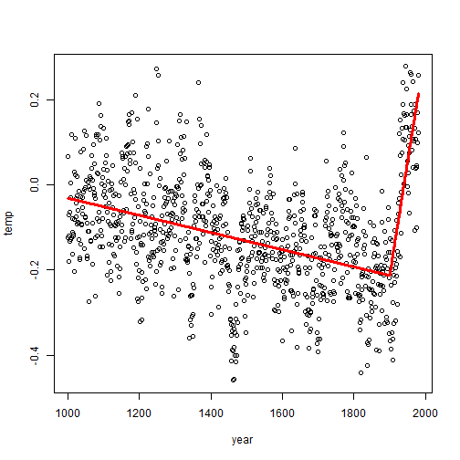

This is the "Hockey Stick Graph"

It was first presented in 1999 by Mann, Bradley & Hughes as evidence for man-made global warming in the ongoing climate debate.
Despite the controversy surrounding reconstruction studies, we are not here to take any side in the argument. What we'll be doing today is to demostrate using this chart Segmented Linear Regression.
So let us get started!
The "hockey stick" is something that can be modelled using a
Spline a piece-wise defined polynomial function satisfying continuity at all breakpoints
which in its simplest form is just two linear segments joined at one single knot point
as represented by this equation: \[ Y_i = \beta_0 + \beta_1 X_i + \gamma_1 (X_i - \xi)_+ + \epsilon_i \] where \(\xi\) is a known knot point
Here's an implementation in R:
# This is the code to reproduce the MBH99 hockey stick diagram shown earlier
sourceURL <- paste("http://www.meteo.psu.edu/holocene/public_html",
"/shared/research/ONLINE-PREPRINTS/Millennium",
"/DATA/RECONS/nhem-recon.dat")
dat <- read.table(sourceURL, col.names=c("year","temp"))
dat <- transform(dat, splineTerm = (year - 1900) * (year > 1900))
fit <- lm(temp~year+splineTerm, data=dat)
with(dat,plot(year,temp))
lines(dat$year, fit$fitted.values, col="red", lwd=3)
So far so good?
?? But what if we don't know
where's the knot point ??
No worries. Because an App has been created just to make things a little easier for you!

<< first you load in your data
<< then select your Y
<< and your X...
<< use slider to adjust position of the kink
<< bottom slider gives X10 resolution!
<< when R2 is maximized, VOILA!!
<< other tabs to explore here
That's it. What are you waiting for? Click here to begin